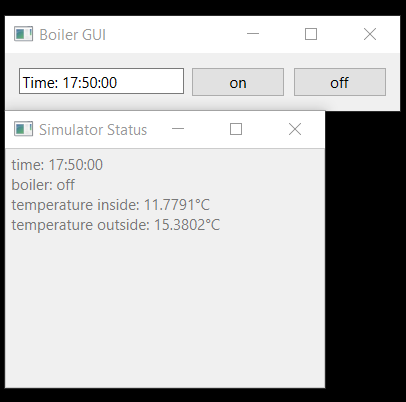

2811 resit coursework: smart thermostat
Tom Kelly
Available:
Deadline:
Submission:
Expected time:
Getting started
- We will improve the user experience for a smart thermostat.
- Download, unzip, and run the Qt project here.
- You will see two windows - showing the simulator status and a boiler graphical user interface (GUI)

- The Simulator Status window shows the current state of the boiler and the simulated temperatures - you will not change this.
- The Boiler GUI shows a GUI to control the boiler - you will improve this.
- Notice that the boiler GUI is very primitive - it has two buttons to control the boiler: on (increase the heat) and off (allow the building to cool). Try this out, and note the changes to inside temperature in the status panel.
- Try using the on and off buttons to keep the inside temperature comfortable throughout the day.
Assignment
- You will design an improved GUI for the boiler control panel. Such a display will be shown on a wall-mounted panel (a smart thermostat) inside a residential house.
- Perform an analysis of the problem space using the PACT (People, Activity, Context, & Technology) framework to scope potential design issues.
- You will design, implement, and evaluate a solution to support two use-cases:
- Sally is going to work late in the office tomorrow. She wishes to ensure that the house will be warm when she wakes up, that the boiler is off when she is in the office (to save energy), that the house will be hot when she arrives in the evening, and finally cool (but not freezing) through the night.
- Sally's son John comes home from school feeling sick and wants to turn the temperature up to 25 degrees straight away.
- Using your knowledge of user-interface theory, create a sketch-prototype of an improved boiler GUI interface.
- Implement your new interface in C++ and Qt, using the supplied project as a starting point.
- Evaluate a single screen of your interface using a Heuristic Evaluation, using heuristics from Norman’s Principles for Interaction Design
Write a report with the following sections:
- Your analysis of the problem space using the PACT framework.
- Your sketch prototype.
- A description of how your prototype applies the user interface theory you have learnt.
- Your Heuristic Evaluation of a single screen, using Heuristics from Norman’s Principles for Interaction Design:
- Present your findings in a table as introduced in the lectures.
- Include negative, as well as positive, findings.
- Include a screenshot of the screen you evaluate.
Notes
- This assignment should take about 20 hours.
- Ensure that your project runs on the lab CentOS machines. Remember that you can use the virtual machines at feng-linux if you are unable to use a local machine.
- Please email questions to your module leader. He will attempt to answer within 48 hours.
- We will take the Boiler GUI window to be shown on a touch-screen of size 20x10cm in the home. For example it may be mounted on the wall, or placed on a coffee table.
- You should aim to create a GUI which satisfies the use-cases while being simple and easy to understand and use.
- We only have a single boiler and single boiler GUI. (We ignore the fact that some smart thermostats might have more than one boiler or screen)
- You should not change the simulator or the status window status.h.
- Start by editing gui.h and gui.cpp. You may add additional files if you wish.
- See example in GUI:makeConnections for how to switch the boiler on if the user clicks a button, and in GUI::timeChanged for how to switch the boiler on and off at particular times.
- Ensure your code is easy to read. Follow these guidelines:
- comment your code with single-line comments (using //) such that someone familiar with C++ and this coursework description (i.e., the person doing the grading) is able to follow it.
- indentation and braces as per 1TBS.
- class names begin with capital letters,
- variable names begin with lower-case letters.
- file-names begin with a lowercase letter.
- constant globals to begin with a lower-case 'k'.
- function length should be limited to 50 lines (excluding empty lines and comments).
- line length should be limited to 100 characters.
- there should be no unused (commented or inaccessible) code.
Submission
- Create a zip file containing your report as a PDF and your code as a Qt C++ project.
- Submit via gradescope
Grading
You will receive marks for:
- Your PACT analysis
- The quality of your prototype
- Your application of user interface theory
- in your design
- in your description of your design
- The quality of your GUI
- The ability of the interface to support the two use-cases
- Your control of the boiler
- The presentation of your code - see notes above.
- The English and presentation of your report